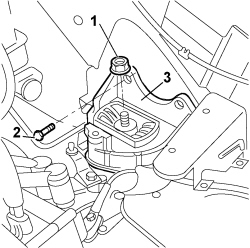
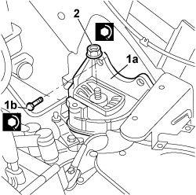

1008b30 gearbox side mount flexible block - replace
- Path
- Procedures > 10 ENGINE > 1008 POWER UNIT SUPPORTS > 1008B power unit mounting blocks > 1008b30 gearbox side mount flexible block - replace
- Kind
- repair procedure (removal / refitting; the operation number is the code)
- Applies to
- engines: 1.4 8v; all production periods
- Interactive page
- https://sloeber94.github.io/elrnDB-fDbl/en/#/2584160
Applies to: engines: 1.4 8v; all production periods
 Removing
Removing
 Refitting
RefittingPosition the vehicle on the lift.
Turn the ignition key to the OFF position.
Disconnect the negative battery terminal.
Description | Connector | |
|---|---|---|
- | BATTERY |
Op. 7055B54 PROTECTION/GUARD UNDER ENGINE - R.R.
Op. 5530B52 BATTERY SUPPORT/DRIP TRAY - R.R.
Partly raise the lift.
Position an arm lift under the engine to support it during the dismantling of the flexible block.
1. Undo the nut fixing the engine support to the flexible mounting.
2. Undo the bolts securing the flexible mounting to the bodyshell.
3. Remove the flexible mounting from the engine compartment.

Applies to: engines: 1.4 8v; all production periods
Refitting
Removing1. Position the flexible block (1a) in its seat in the engine compartment, tighten bolts (1b) securing it to the body and tighten to the specified torque.
Fastening | Component | dia | Value (daNm) | |
|---|---|---|---|---|
1b | Bolt | GEARBOX SIDE RUBBER MOUNT | M8 | (Bodyshell side) 2.3 - 2.8 |
2. Tighten the nut fixing the engine mount to the flexible mounting to the recommended torque.
Fastening | Component | dia | Value (daNm) | |
|---|---|---|---|---|
2 | Nut | GEARBOX SIDE RIGID SUPPORT FOR POWER UNIT | M12 X 1.25 | (Flexible mounting side) 9 |

Applies to: engines: 1.4 8v; all production periods
Remove the arm lift used for supporting the power unit.
Lower the lift.
Op. 5530B52 BATTERY SUPPORT/DRIP TRAY - R.R.
Op. 7055B54 PROTECTION/GUARD UNDER ENGINE - R.R.
Connect the negative battery terminal.
Description | Connector | |
|---|---|---|
- | BATTERY |
Remove the vehicle from the lift.